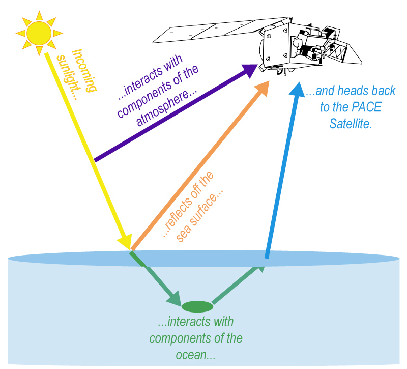

PACE – It All Adds Up!
Breaking Down Light
Photon Interaction: Photons from the sun hit sensors on the PACE satellite, which is 676.5 km above Earth. This interaction provides valuable data about the ocean and atmosphere.
Light Pathways: Photons may travel through the atmosphere, reflect off surfaces, or enter the ocean before returning to the satellite. The water-leaving light component is only about 10% of the total light received.

Understanding Ocean and Atmospheric Health
Radiative Transfer: This concept explains how sunlight interacts with various elements in the atmosphere and ocean, helping us identify the materials that affect the photons before reaching the satellite.
Key Concepts in Radiative Transfer
Radiative Transfer Processes: These processes change light energy or wavelength as it travels through air or water, identifying net changes in radiance.
Losses and Gains: Light can be lost through scattering or absorption and gained through scattering back into the radiant path.
Optical Properties
Inherent Optical Properties (IOPs): These are dependent on the physical and chemical makeup of a medium or object, such as how light is absorbed/scattered at different wavelengths.
Apparent Optical Properties (AOPs): These depend on the medium's properties and incoming light, affecting how an object appears under different lighting conditions.
Importance of AOPs and IOPs
Remote Sensing Reflectance: A key AOP estimate used to infer IOPs like phytoplankton absorption, which aids in assessing ocean health and carbon fixation.
Measurement Variables
Radiometric Variables: These reflect how much sunlight reaches an area and at which wavelengths, crucial for calculating AOPs.
Boundary Conditions: These determine how light reflects and transmits through the ocean and atmosphere, impacting the analysis.
Models of Radiative Transfer
Forward Models: Use known IOPs and boundary conditions to derive radiance within a medium.
Data Collection: Observations and laboratory measurements help build data lookup tables, optimizing computing time.
Conclusion
Mapping Light to Understanding: The light reaching the PACE satellite represents an AOP, which can be analyzed to retrieve information about IOPs related to phytoplankton, aerosols, clouds, and ecosystems—key focuses of the PACE mission.
Joke:
Why did the scientist bring a ladder to the ocean?
Because they wanted to reach new heights in marine research!